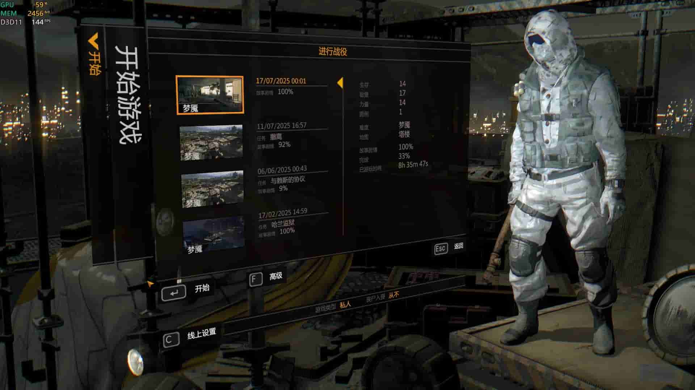
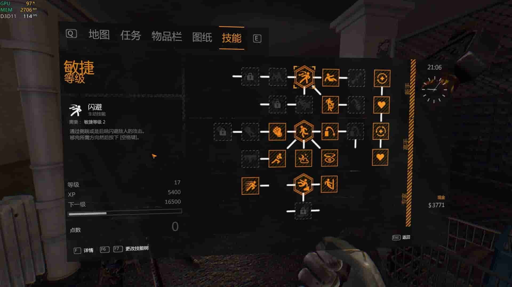
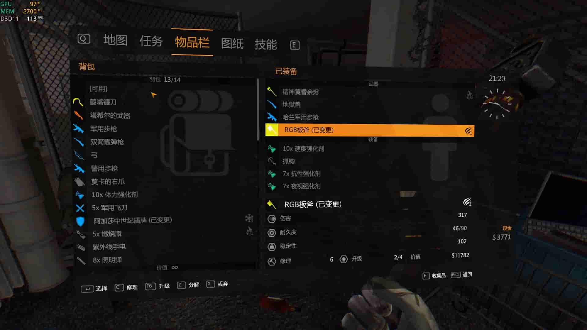

永恒之夜 - 更新日志
2025-07-17
致热爱消光的朋友们：
mod完成后刚好我没有时间进行测试，导致了一些问题。现在我花时间充分地游玩了一遍，
总结为以下几点：
- 第一就是画面实在是太暗了，本意是要加强游戏的恐怖氛围，但实际上却影响了玩家的视觉体验。
- 第二就是某些技能的描述不够清晰，导致玩家在使用时产生困惑。
- 第三就是游戏的过场动画需要进一步优化，以提升整体的流畅度和观赏性。我把很多过场动画直接删除了，导致游戏出现了一些鬼畜画面
实际游玩时，我发现游戏的整体体验还是不错的，尤其是游戏氛围营造十分出色。
游戏的总体难度是原本的2~3倍，适合喜欢挑战的玩家。（我只测试了梦魇难度）与原版相比，在梦魇难度下，挑战性大大提升，
很多任务需要多次尝试才能完成，几乎每个任务都需要死几次才能成功。我在两个任务处卡关了很久，甚至有时候需要依靠一些小技巧才能通过。
但我相信这会给大家带来更多的乐趣和成就感。某一时刻我还以为自己在打魂游，三百六十五里路呀......越过春夏秋冬......
为了最真实的模拟大众的游戏体验，我没有刷等级，也没有使用任何作弊手段，完全按照游戏的设定进行游玩。
没有卡仓库bug，最终还是成功通关了游戏。下面附上几张通关截图，供大家参考。
- 永恒之夜·梦魇通关
- 无mod·梦魇通关
- 力量加点
- 敏捷加点
- 幸存者加点
- 背包
v1.2.1 2025-07-17
🌙 夜间体验优化
- 恢复游戏原本的光线设置
- 优化了梦魇模式下的手电筒，提升了其照明范围和亮度。
实际游玩下来，我发现很多时候我根本不想开手电，因为电池实在是太虚了。
现在我把手电的电池恢复速度加快了，增加了手电的照明范围和亮度。提高手电的存在感
⚖️ 平衡性调整
- 众所周知，石中剑的耐久是十分低的，现在我将其耐久值提高为90，并且使其可以被修复。
- 众所周知，原本在困难模式下，商店是不卖子弹的，但是梦魇难度却可以购买子弹。我结合游戏性考虑，
决定改成困难模式下也可以购买子弹。
✨ 新增内容
- 为了在游戏通过之后可以释放一下压力，我将加强《不招待就使坏》
（在以困难难度以上通关游戏获得的发光骷髅衣）
穿上后加一点移速，获得10%伤害抗性，50%的爆炸抗性，每秒回血1%
🔧 优化改进
-
由于我是1650显卡，所以在画面特效上做了一些妥协，尽量保持游戏的流畅性。
默认在mod中加入了更低的特效设置。删除了很多不必要的特效。
甚至关掉了光追效果，导致游戏的画面出现一些莫名其妙的打光。
现在我将推出原本画质的版本，供有更高显卡的玩家使用。
-
如果使用fps优化版，可能会导致部分特效缺失，但整体帧率会有明显提升。实测1650
显卡在1080p分辨率下，帧率从56帧提升至144帧，跑到我的显示器的刷新率上限。
← 返回游戏介绍